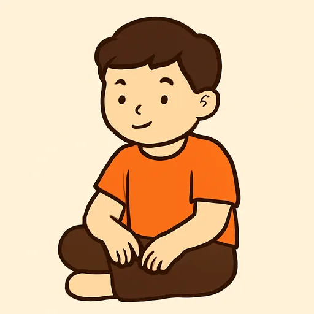
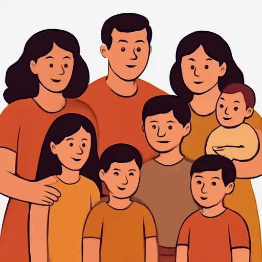

Черновик: урок написан, но преподаватель его ещё не вычитал.
Semana 6 · Día 5 — Mi familia: texto modelo y presentación
Неделя 6 · День 5 — Моя семья: образец текста и презентация
Сегодня вы научитесь
- строить связный текст о семье из пяти блоков, а не из списка фраз;
- соединять фразы словами y, pero, también, tampoco, además, por eso;
- читать свой текст вслух так, чтобы он звучал по-испански, — и записать минуту речи.
1. Разминка (0–3 мин)
- Карточки: 10 слов (вчерашние вопросы и слова недельной давности).
- Вопрос по вчерашнему уроку: задайте вслух три вопроса о тёте собеседника.
2. Фонетика (3–6 мин)
Тильда, которая РАЗБИВАЕТ дифтонг (hiato). Когда над i или u стоит тильда рядом с другой гласной, дифтонга нет: получается два слога. Это единственная работа этой тильды, и она важна — от неё зависит, сколько слогов в слове:
el tí-o (2) · la tí-a (2) · el dí-a (2) · Ma-rí-a (3) · mí-o (2) · pa-ís (2) · frí-o (2)
Сравните: tío = [ТИ-о], два слога, а tio без тильды звучало бы [тьо] — один слог. Вчерашнее estudia — три слога (es-tu-dia), а María — три (Ma-rí-a), и в первом дифтонг, во втором нет.
И связывание слов (enlace). В беглой речи конечная согласная приклеивается к следующей гласной, и пауз между словами нет:
mi‿hermano · está‿en casa · mis‿abuelos · es‿enfermera · vive‿con‿ellos
Прочитайте эти пять сочетаний слитно, одним дыханием: сегодня вы записываете минуту речи, и именно связывание отличает чтение по слогам от речи.
3. Новое (6–16 мин)
Пример
Текст Дмитрия. Это образец: столько же слов и такая же структура нужны от вас
в конце урока. [AUDIO]
Mi familia
Me llamo Dmitri y soy de San Petersburgo. Mi familia es pequeña: en casa somos tres, mis padres y yo. Y el gato, Tishka. Soy hijo único. Mi padre se llama Serguéi, tiene cincuenta y dos años y es ingeniero. Es tranquilo. Mi madre, Olga, tiene cincuenta años y es profesora de música. Es muy alegre. Ahora mis padres están en Rusia y yo estoy aquí, en Valencia. Mi abuela es viuda y vive con ellos. Somos pocos, pero estamos muy unidos.
Текст разобран на блоки — это и есть «структура»:
| Блок | Español | Русский |
|---|---|---|
| 1. Кто я | Me llamo Dmitri y soy de San Petersburgo. | Меня зовут Дмитрий, я из Санкт-Петербурга. |
| 2. Сколько нас | Mi familia es pequeña: en casa somos tres, mis padres y yo. | Семья у меня небольшая: нас дома трое, родители и я. |
| 2. Деталь, которая запоминается | Y el gato, Tishka. Soy hijo único. | И кот, Тишка. Я единственный сын. |
| 3. По человеку: имя, возраст, занятие | Mi padre se llama Serguéi, tiene cincuenta y dos años y es ingeniero. | Моего отца зовут Сергей, ему пятьдесят два года, он инженер. |
| 3. По человеку: какой он | Es tranquilo. / Es muy alegre. | Он спокойный. / Она очень весёлая. |
| 4. Где кто сейчас | Ahora mis padres están en Rusia y yo estoy aquí, en Valencia. | Сейчас мои родители в России, а я здесь, в Валенсии. |
| 5. Вывод одной фразой | Somos pocos, pero estamos muy unidos. | Нас немного, но мы очень дружные. |
Объяснение
Пять блоков — порядок, который работает всегда:
- Кто я: Me llamo… y soy de…
- Сколько нас: En casa somos tres / En mi familia somos cinco… — и перечисление, плюс одна деталь, которая запоминается: питомец, «soy hijo único», бабушка, которая живёт с вами.
- По каждому человеку две фразы: имя + возраст + занятие; потом характер или внешность.
- Где кто сейчас (estar): Mis padres están en Rusia y yo estoy aquí.
- Вывод одной фразой: Somos una familia grande / pequeña, pero estamos muy unidos.
Somos + число = «нас столько-то». Русское «нас четверо» или «в моей семье четыре человека» по-испански делается глаголом ser:
En casa somos tres. · En mi familia somos seis. · ¿Cuántos sois en tu familia?
Напоминание про mayor и menor. Вы их выучили в прошлый вторник: mi hermano mayor — старший брат, mi hermana menor — младшая сестра. В тексте о семье они нужны почти всегда, а в описании возраста mayor значит ещё и «в возрасте» (mi abuela es mayor): одно слово, два употребления.
Шесть слов, которые превращают список в текст:
| Español | Русский | Пример |
|---|---|---|
| y | и; а (лёгкое сопоставление) | Mi padre es ingeniero y mi madre es profesora. |
| pero | но (настоящее противопоставление) | Es pequeña, pero estamos muy unidos. |
| también | тоже (в утверждении) | Mi hermano también es alegre. |
| tampoco | тоже не (в отрицании) | Yo tampoco tengo perro. |
| además | кроме того, к тому же | Es enfermera y además estudia inglés. |
| por eso | поэтому | Vive en Moscú, por eso no está aquí. |
Как читать текст на запись. Три вещи: (1) паузы только там, где точка или двоеточие; (2) слова внутри фразы связывайте (mi‿hermano, está‿en casa); (3) вопрос вверх, точка вниз. Минута — это примерно 90–110 слов вслух, то есть ваш текст плюс одна-две фразы.
⚠️ Контраст с русским
- Русское «а» делает две работы сразу: лёгкое сопоставление («Отец инженер, а мать учительница») и настоящее противопоставление («Я звал, а он не пришёл»).
- В испанском это два разных слова: сопоставление — y, настоящее «но» — pero. По умолчанию при перечислении людей в семье нужен y.
- Вы захотите сказать: ✗ Mi padre es ingeniero, pero mi madre es profesora. ✗ Yo también no tengo hermanos. → Правильно: ✅ Mi padre es ingeniero y mi madre es profesora. ✅ Yo tampoco tengo hermanos.
Что помогает: «тоже» и «тоже не» в русском различаются порядком и отрицанием — вы УЖЕ чувствуете разницу между «я тоже знаю» и «я тоже не знаю». В испанском на это просто два отдельных слова: también и tampoco.
4. Практика (16–26 мин)
Упражнение А. Y или pero? Выберите и скажите фразу целиком.
Модель: Mi padre es ingeniero ___ mi madre es profesora. → y
- Mi hermana es alegre ___ hoy está triste.
- Mi tío vive en Sevilla ___ mi tía vive en Valencia.
- La familia es pequeña ___ estamos muy unidos.
- Mi abuelo está jubilado ___ trabaja en el jardín todos los días.
- Mi hija estudia en la escuela ___ mi hijo tiene cuatro años.
- Mi primo es muy simpático ___ bastante tímido.
Упражнение Б. Дополните текст. Банк слов:
somos · también · tampoco · además · por eso · mayor · menor · unidos
En mi familia ______ seis. Mi hermana ______ tiene diecinueve años y estudia en la universidad; mi hermano ______ tiene ocho. Mi madre es profesora y ______ trabaja en una escuela de música. Mi padre trabaja en una empresa lejos de la ciudad: ______ no está en casa entre semana. Mi hermana no tiene perro y yo ______ tengo. Mi abuela vive con nosotros y ______ es de Kazán. Somos una familia grande, pero estamos muy ______.
Упражнение В. Исправьте ошибки. В каждой фразе одна ошибка.
- Mi padre es ingeniero, pero mi madre es profesora.
- Mi padre tiene cincuenta y uno años.
- Mi madre es muy simpática: es una simpática mujer.
- Hoy mi madre es cansada.
- Ahora mis padres son en el trabajo.
- En casa tengo gato.
- Es el gato mi hermana.
- Mi hermana no tiene perro y yo también no tengo perro.
5. Выход (26–29 мин)
Напишите «Mi familia» (80 слов) и запишите текст на телефон.
Пишите по пяти блокам из урока; 80 слов — это примерно столько же, сколько в тексте Дмитрия (в нём ровно 82). Считайте слова: умение попасть в заданный объём проверяют в письменной части DELE.
Проверьте по списку, прежде чем записывать:
- [ ] есть somos + число;
- [ ] у каждого человека имя, возраст (tiene… años) и занятие;
- [ ] хотя бы один раз ser для характера и один раз estar для места или состояния;
- [ ] хотя бы одно de (el perro de mi hermana, la hermana de mi madre);
- [ ] y там, где по-русски «а»; pero только для настоящего «но»;
- [ ] вывод одной фразой в конце.
Потом прочитайте вслух и запишите. Послушайте запись один раз и отметьте одно слово, которое хочется произнести лучше, — не десять, одно.
6. Итог (29–30 мин)
- [ ] Я строю текст о семье из пяти блоков.
- [ ] Я соединяю фразы через y, pero, también, tampoco, además, por eso.
- [ ] Я записал минуту речи о своей семье.
- Добавьте слова дня в колоду. Завтра — тест по всей единице 3.
Словарь дня
| Español | Русский | Пример |
|---|---|---|
| somos tres | нас трое | En casa somos tres. |
 el hijo único / la hija única |
единственный ребёнок | Soy hijo único. |
| sobre todo | особенно, прежде всего | Mi familia es tranquila, sobre todo mi padre. |
| además | кроме того, к тому же | Es enfermera y además estudia inglés. |
| por eso | поэтому | Vive en Moscú, por eso no está aquí. |
| en total | всего, в общей сложности | En total somos ocho. |
| estamos unidos | мы дружные, мы близки | Somos pocos, pero estamos muy unidos. |
 la familia numerosa |
большая, многодетная семья | En España una familia numerosa tiene tres hijos o más. |
Ответы
А. 1. pero (настоящее противопоставление) · 2. y (простое сопоставление, по-русски «а») · 3. pero · 4. pero (на пенсии — и всё равно работает) · 5. y · 6. pero (simpático и tímido противопоставлены).
Б. somos · mayor · menor · además · por eso · tampoco · también · unidos.
В. 1. …ingeniero y mi madre es profesora (русское «а» — это y). · 2. cincuenta y un años (перед существительным uno теряет -o; неделя 3, день 5). · 3. …es una mujer simpática (прилагательное ПОСЛЕ существительного; неделя 4, день 3). · 4. Hoy mi madre está cansada (состояние). · 5. Ahora mis padres están en el trabajo (место). · 6. En casa tengo un gato (артикль). · 7. Es el gato de mi hermana (принадлежность). · 8. …y yo tampoco tengo perro (отрицание).
Эти восемь — ровно восемь самых частых ошибок русскоговорящего в тексте о семье. Перечитайте свой текст из «Выхода» и проверьте его по этому же списку: если найдёте у себя хотя бы две из восьми, это нормально и это именно то, что надо было найти до теста.